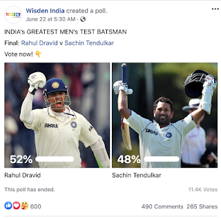
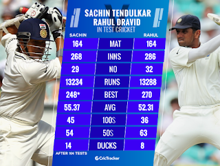

Rahul Dravid Beats Sachin Tendulkar in the tight race of Best Test Cricketer

Rahul Dravid won against Sachin Tendulkar to become the Best Indian Test Cricketer in the last 50 years. Wisden India arranged the Facebook poll on 23 June to find out the Best Indian Test Cricketer in the last 50 years and asked people to vote for either Sachin or Rahul.
This poll was active for 24 hours. Almost 11,400 cricket fans participated in this poll and voted for their favorite batsman. At the end of this nail-biting poll, Rahul Dravid received 52% of the vote and Sachin received 48% of the vote. So we can say Rahul Dravid won by 4 runs against Sachin Tendulkar.

Initially, this poll was arranged among 16 Indian players by Wisden India. Sunil Gavaskar & Virat Kohali were another two who reached the semi-finals.
Semi-final played between Sachin vs Virat & Dravid vs Gavsakr. Sachin and Dravid both won the semi-finals against their tough opponent & reached the final.

This result shows even if Sachin and Dravid are retired today but people still haven't forgotten them and still have a place for them in a heart.